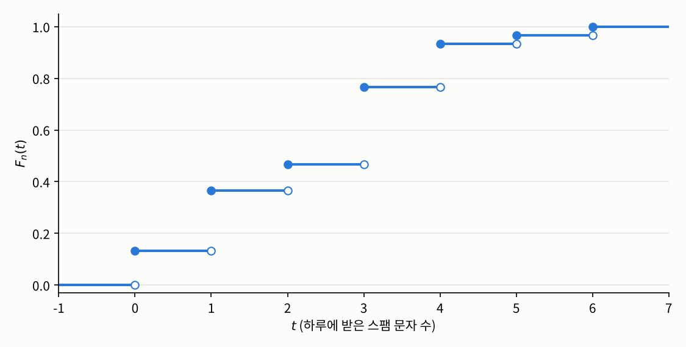
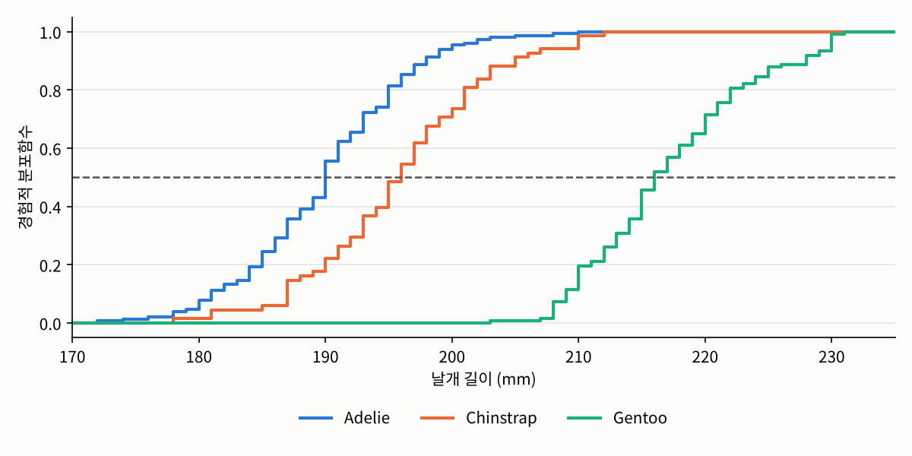
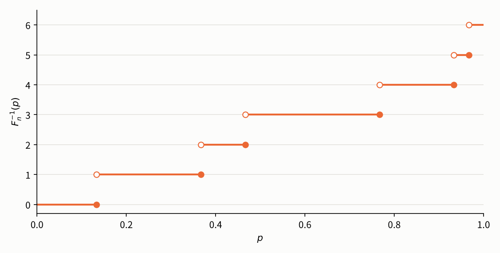

2.4 경험적 분포함수
2장 데이터의 종류와 분포 보기 · 아무것도 버리지 않는 그림
들어가며
지난 글의 히스토그램과 커널 밀도 추정은 분포의 모양을 보기에 좋지만, 계급이나 대역폭을 우리가 정해야 하고 그 선택에 따라 그림이 달라진다는 약점이 있었습니다. 또 같은 계급에 들어간 값들은 하나로 뭉뚱그려지니 정보도 조금씩 잃습니다.
이번 글에서는 아무것도 정하지 않고, 데이터를 하나도 버리지 않으면서 분포 전체를 담는 방법을 다룹니다. 2.2에서 본 누적상대도수를 실수 전체로 넓힌 경험적 분포함수입니다. 먼저 이 함수를 정의하고 성질을 살펴본 뒤, 이 함수를 거꾸로 읽는 경험적 분위수 함수를 정의하겠습니다. 경험적 분위수 함수는 다음 글의 분위수와 박스 플롯의 바탕이 됩니다.
“t 이하인 데이터의 비율”
2.2에서 김찬호의 스팸 문자 데이터에 대해, 각 값 \(a_j\) 이하인 날의 비율인 누적상대도수를 계산했습니다. 예를 들어 3개 이하를 받은 날의 비율은 \(F(3) = 0.767\)이었습니다.
이 질문은 데이터에 나온 값이 아니어도 얼마든지 물을 수 있습니다. “2.9개 이하인 날의 비율”은 2개 이하인 날의 비율과 같고, “−1개 이하인 날의 비율”은 0입니다. 이렇게 모든 실수 \(t\)에 대해 “\(t\) 이하인 데이터의 비율”을 대응시키면 하나의 함수가 됩니다.
정의를 말로 읽으면 “\(x_i \le t\)이면 1점, 아니면 0점을 매겨 평균을 낸 것”, 즉 \(t\) 이하인 데이터의 비율입니다. 아래 첨자 \(n\)은 이 함수가 데이터 \(n\)개로 만들어졌다는 것을 표시합니다. 이름에 붙은 “경험적”(empirical)은 이론적으로 주어진 분포가 아니라 실제로 관찰한 데이터에서 계산했다는 뜻입니다.
스팸 데이터로 몇 개의 \(t\)에서 값을 계산해 보겠습니다.
import numpy as np
rng = np.random.default_rng(1557)
spam = rng.poisson(2.5, size=30) # 김찬호가 30일 동안 하루에 받은 스팸 문자 수
def ecdf(data, t):
"""경험적 분포함수 F_n(t): t 이하인 데이터의 비율"""
return np.mean(data <= t)
for t in [-1, 0, 0.5, 2, 2.9, 3, 6, 10]:
print(f"F_n({t:>4}) = {ecdf(spam, t):.3f}")F_n( -1) = 0.000
F_n( 0) = 0.133
F_n( 0.5) = 0.133
F_n( 2) = 0.467
F_n( 2.9) = 0.467
F_n( 3) = 0.767
F_n( 6) = 1.000
F_n( 10) = 1.000\(t\)가 0에서 0.5로 움직이는 동안에는 값이 변하지 않다가, \(t\)가 3에 닿는 순간 0.467에서 0.767로 뛰어오릅니다. 데이터에 3이 9번 있었으니 \(9/30 = 0.3\)만큼 뛴 것입니다. 그래프로 그리면 다음과 같습니다.

계단 모양입니다. 각 계단의 왼쪽 끝에 찍힌 색칠된 점은 “이 점에서의 함숫값은 위쪽 값”이라는 뜻이고, 오른쪽 끝의 빈 점은 “이 점은 포함되지 않는다”는 뜻입니다. 이 모양을 정리로 적어 보겠습니다.
경험적 분포함수의 성질
정리를 쉬운 말로 다시 읽어 보겠습니다. 경험적 분포함수는 맨 왼쪽에서 0으로 시작해서, 데이터가 있는 자리를 지날 때마다 그 자리에 있는 데이터의 비율만큼 계단을 올라가고, 마지막 데이터를 지나면 1에 도달합니다. 데이터가 없는 곳에서는 평평합니다. 그래서 그래프만 보고도 원래 데이터의 도수분포를 완전히 되살릴 수 있습니다. 어디서 몇 칸 뛰었는지를 읽으면 되니까요. 히스토그램과 달리 정보를 하나도 잃지 않는 그림입니다.
2.2의 누적상대도수 \(F(a_j)\)는 이 함수를 데이터 값 \(a_j\)에서만 본 것입니다. 실제로 증명의 식에서 \(F_n(a_j) = \sum_{l=1}^{j} f(a_l) = F(a_j)\)임을 확인할 수 있습니다.
여러 집단을 한 그림에서 비교하기
연속형 데이터에서는 거의 모든 값이 한 번씩만 나오므로, 경험적 분포함수는 데이터마다 \(1/n\)씩 올라가는 아주 촘촘한 계단이 됩니다. 펭귄 세 종의 날개 길이에 대한 경험적 분포함수를 한 그림에 그려 보겠습니다.

이 그림에서 여러 가지를 읽을 수 있습니다.
- 곡선이 오른쪽에 있을수록 값이 큽니다. 젠투펭귄(Gentoo)의 곡선이 다른 두 종보다 한참 오른쪽에 있으니, 젠투펭귄의 날개가 대체로 더 깁니다.
- 높이 0.5에서 읽으면 가운데 값을 알 수 있습니다. 회색 점선과 각 곡선이 만나는 곳의 \(t\)는 “데이터의 절반이 이 값 이하”인 값으로, 아델리펭귄(Adelie)은 약 190mm, 턱끈펭귄(Chinstrap)은 약 196mm, 젠투펭귄은 약 216mm입니다. 이 값이 다음 글에서 정의할 중앙값입니다.
- 세로로 읽으면 비율을 알 수 있습니다. \(t = 200\)에서 각 곡선의 높이를 읽으면, 날개 길이가 200mm 이하인 비율이 아델리펭귄은 약 95%, 턱끈펭귄은 약 74%, 젠투펭귄은 0%입니다.
- 가파른 곳에 데이터가 몰려 있습니다. 곡선이 짧은 구간에서 빠르게 올라간다는 것은 그 구간에 데이터가 많다는 뜻입니다. 히스토그램에서 막대가 높은 곳이 경험적 분포함수에서는 기울기가 가파른 곳으로 나타납니다.
반면 봉우리가 몇 개인지 같은 모양은 히스토그램보다 경험적 분포함수에서 알아보기 어렵습니다. 그래서 두 그림은 서로를 대신하기보다, 함께 보는 것이 좋습니다.
거꾸로 읽기: 경험적 분위수 함수
위에서 “높이 0.5인 곳의 \(t\)”를 읽은 것처럼, 경험적 분포함수를 거꾸로 읽고 싶을 때가 많습니다. “데이터의 25%가 이 값 이하가 되는 값은 무엇인가?” 같은 질문입니다. 보통 이런 일은 역함수가 해 줍니다.
그런데 \(F_n\)은 계단 함수라서 보통의 역함수가 없습니다. 평평한 구간에서는 여러 \(t\)가 같은 값을 가지니 일대일이 아니고, 계단이 뛰어오르는 곳에서는 건너뛴 값들이 있으니 모든 값을 갖지도 않습니다. 스팸 데이터에서 \(F_n(t) = 0.5\)인 \(t\)는 아예 없습니다. 0.467에서 0.767로 한 번에 뛰어올랐기 때문입니다.
그래서 “정확히 \(p\)가 되는 곳” 대신 “처음으로 \(p\) 이상이 되는 곳”을 찾기로 합니다.
말로 하면, \(F_n^{-1}(p)\)는 경험적 분포함수가 처음으로 \(p\) 이상이 되는 가장 작은 \(t\)입니다. \(F_n\)이 오른쪽 연속인 계단 함수이고 마지막에는 1에 도달하므로(정리 2.4.2), 이런 \(t\)들의 집합은 어떤 데이터 값에서 시작하는 반직선이고 최솟값이 항상 존재합니다. 이렇게 역함수가 없는 함수에 대해 “처음으로 넘어서는 곳”으로 정의한 역함수 대용품을 일반화된 역함수(generalized inverse)라고 부릅니다.
정의는 추상적으로 보이지만, 실제로 계산하면 아주 간단한 답이 나옵니다.
결국 경험적 분위수 함수는 “데이터를 줄 세웠을 때 앞에서 \(np\)번째쯤(정확히는 올림한 자리)에 서 있는 값”입니다. 코드로 확인해 보겠습니다.
import numpy as np
rng = np.random.default_rng(1557)
spam = rng.poisson(2.5, size=30)
x_sorted = np.sort(spam)
n = spam.size
def quantile_function(p):
"""F_n^{-1}(p) = min{t : F_n(t) >= p} = x_(ceil(np))"""
k = int(np.ceil(n * p))
return x_sorted[k - 1] # 파이썬은 0부터 세므로 k-1번째
for p in [0.1, 0.25, 11/30, 0.4, 0.5, 0.9, 1.0]:
print(f"F_n^(-1)({p:.3f}) = {quantile_function(p)}")F_n^(-1)(0.100) = 0
F_n^(-1)(0.250) = 1
F_n^(-1)(0.367) = 1
F_n^(-1)(0.400) = 2
F_n^(-1)(0.500) = 3
F_n^(-1)(0.900) = 4
F_n^(-1)(1.000) = 6예를 들어 \(p = 0.5\)이면 \(\lceil 30 \times 0.5 \rceil = 15\)이므로 15번째로 작은 값인 3입니다. 경험적 분포함수가 0.5가 되는 곳은 없었지만, 처음으로 0.5를 넘어서는 곳은 \(t = 3\)입니다. 그래프로 그리면 다음과 같습니다.

경험적 분포함수의 그래프를 대각선에 대해 뒤집은 모양입니다. 경험적 분포함수에서 평평했던 부분은 여기서 뛰어오르는 부분이 되고, 뛰어올랐던 부분은 평평한 부분이 됩니다. 정의에서 바로 따라 나오는 성질로, 경험적 분위수 함수도 단조 증가하고, 이번에는 각 계단의 오른쪽 끝을 포함하는 왼쪽 연속인 계단 함수입니다.
기호 \(F^{-1}\)에 대한 주의
수학에서 \(F^{-1}\)이라는 기호는 문맥에 따라 세 가지 다른 뜻으로 쓰입니다.
- 보통의 역함수: \(F\)가 일대일 대응일 때의 역함수입니다.
- 일반화된 역함수: 이 글의 \(F_n^{-1}(p) = \min\{t : F_n(t) \ge p\}\)처럼, 역함수가 없을 때 “처음으로 넘어서는 곳”으로 정의한 것입니다.
- 역상(preimage): 집합 \(B\)에 대해 \(F^{-1}(B) := \{t : F(t) \in B\}\), 즉 함숫값이 \(B\)에 들어가는 점들의 집합입니다.
세 번째 뜻으로 경험적 분포함수를 보면 재미있는 사실이 하나 보입니다. \(F_n^{-1}(\{p\})\), 즉 \(F_n(t) = p\)를 정확히 만족하는 \(t\)들의 집합은 둘 중 하나입니다. 계단이 \(p\)를 건너뛰었다면 공집합이고, 어떤 계단의 높이가 정확히 \(p\)라면 그 계단이 차지하는 구간입니다. 스팸 데이터에서 \(F_n^{-1}(\{0.5\}) = \varnothing\)이고, \(F_n^{-1}(\{11/30\}) = [1, 2)\)입니다.
두 번째 경우, 즉 \(F_n(t) = p\)인 \(t\)가 한 구간을 이루는 경우에는 “데이터의 \(100p\%\)가 이 값 이하”라고 말할 수 있는 값이 하나가 아니라 여러 개라는 뜻입니다. 이 미묘한 점이 다음 글에서 분위수를 정의할 때 소프트웨어마다 값이 달라지는 이유가 됩니다. 이 과목에서는 혼동을 피하기 위해, 특별한 말이 없으면 \(F_n^{-1}(p)\)는 두 번째 뜻(일반화된 역함수)으로만 쓰겠습니다.
경험적 분포함수가 앞으로 할 일
경험적 분포함수는 이 장에서 가장 수학적인 도구이지만, 그만큼 앞으로 여러 번 다시 등장합니다.
- 5장에서는 모집단 분포의 누적분포함수 \(F(t) = \mathbb{P}(X \le t)\)를 정의합니다. 경험적 분포함수는 그 표본 버전이고, 데이터가 많아질수록 모집단의 누적분포함수에 다가갑니다. 이 사실을 정확히 적은 정리가 글리벤코–칸텔리 정리(Glivenko–Cantelli theorem)이며, “통계학의 기본 정리”라고 불리기도 합니다.
- 7장의 부트스트랩은 모집단 분포를 모를 때 그 자리에 경험적 분포함수를 대신 넣어 추론하는 방법입니다.
- 두 집단의 경험적 분포함수가 가장 멀리 떨어진 거리로 두 분포가 같은지 판단하는 콜모고로프–스미르노프 검정(Kolmogorov–Smirnov test)이라는 방법도 있습니다. 이는 비모수 통계에서 다룹니다.
정리
이번 글에서는 데이터를 줄 세워 분포 전체를 담는 방법을 다루었습니다.
- 경험적 분포함수 \(F_n(t)\)는 “\(t\) 이하인 데이터의 비율”로, 모든 실수에서 정의된 누적상대도수입니다.
- \(F_n\)은 0에서 시작해 데이터 값마다 그 상대도수만큼 뛰어올라 1에 도달하는 단조 증가, 오른쪽 연속인 계단 함수이며, 정보를 하나도 잃지 않습니다.
- 여러 집단의 경험적 분포함수를 겹쳐 그리면 위치, 가운데 값, 특정 값 이하의 비율을 한눈에 비교할 수 있습니다.
- 계단 함수에는 보통의 역함수가 없으므로, 경험적 분위수 함수 \(F_n^{-1}(p) = \min\{t : F_n(t) \ge p\}\)를 일반화된 역함수로 정의합니다. 이 값은 순서통계량 \(x_{(\lceil np \rceil)}\)입니다.
경험적 분위수 함수로 “데이터의 \(100p\%\)가 이 값 이하”인 값을 구할 수 있게 되었습니다. 그런데 위에서 보았듯이 그런 값이 여러 개일 때가 있습니다. 그중 무엇을 골라야 할까요? 다음 글에서는 이 질문에서 출발해 분위수를 정의하고, 분위수 다섯 개로 분포를 요약하는 박스 플롯을 그려 보겠습니다.
연결되는 개념
- \(\leftarrow\) 이전 개념: 2.3 히스토그램과 분포의 모양
- \(\rightarrow\) 다음 개념: 2.5 분위수와 박스 플롯